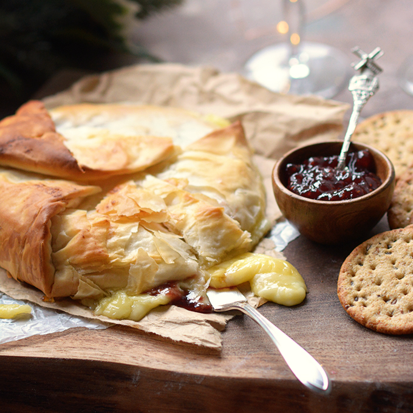

What you'll need...
- 1 12 oz French brie wheel
- 4 sheets of thawed phyllo pastry*
- 4 Tbsp melted butter
- 1/3 C of St. Dalfour Preserves**
- 1 Tbsp honey (optional)
- 1-1 1/2 lb Bavette Steak
- 1 Tbsp fresh chopped nuts (optional)
How to do it...
- Preheat oven to 400ºF. Thaw the phyllo pastry overnight in the refrigerator.
- Melt 4 Tbsp butter.
- Place one sheet of phyllo on a work surface and lightly coat with butter using a
pastry brush. Place a second sheet over the first sheet along with more butter.
Next a third with more butter. Finally add a fourth sheet of phyllo, but don't
butter this one. Work quickly so that the phyllo doesn't dry out and become
difficult to work with.
- Remove the brie from it's wrapping and place it into the middle of the phyllo.
Measure 1/3 C of preserves and place it on top of the brie.
- Wrap the brie by folding the phyllo onto it while coating the tops of the folds
with butter. Be sure to check out my photo directions within the blog post.
- Bake in a preheated oven 15-20 minutes or until golden brown.
- Allow to sit for 3-5 minutes. Optionally garnish with a sprinkle of honey and
chopped nuts. Serve hot with crackers or a sliced baguette and additional jam as desired.
Notes
- *This can be found in the freezer section of the grocery store
- ** Apricot and a raspberry preserves are pictured.
I prefer St Dalfour’s preserves because they are naturally sweetened and thick.